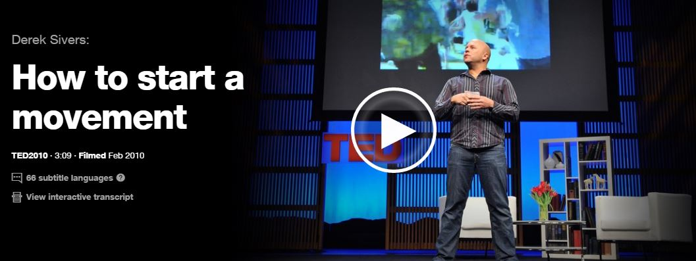
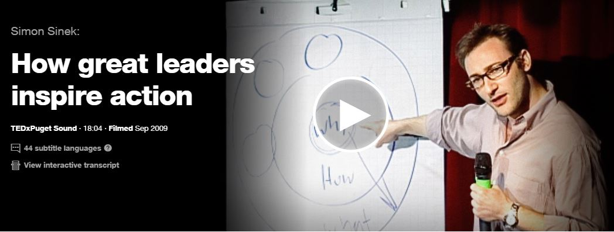

Derek Sivers explains what starts a movement. Before watching the TED talk, ask yourself what is so important about being a follower?
Derek Sivers explains what starts a movement. Before watching the TED talk, ask yourself what is so important about being a follower?

Simon Sinek discusses how leaders inspire actions through belief. People don't necessarily care what you produce, they care why you produce it.
Simon Sinek discusses how leaders inspire actions through belief. People don't necessarily care what you produce, they care why you produce it.

Julia Galef teaches us that perspective is everything and by changing lenses and challenging biases, we can overcome our differences in search for the truth.

Roselinde Torres takes her 25 years worth of experience to describe what it takes to be a great leader. Hint: It’s not doing the same thing over and over and hoping for different results.
Recommended Books
Field Guide